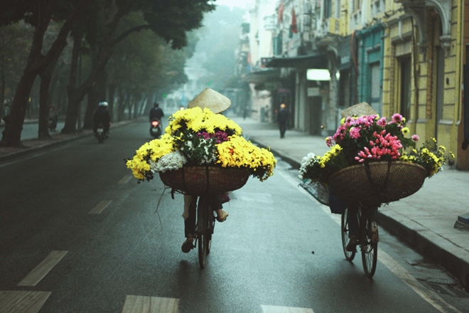
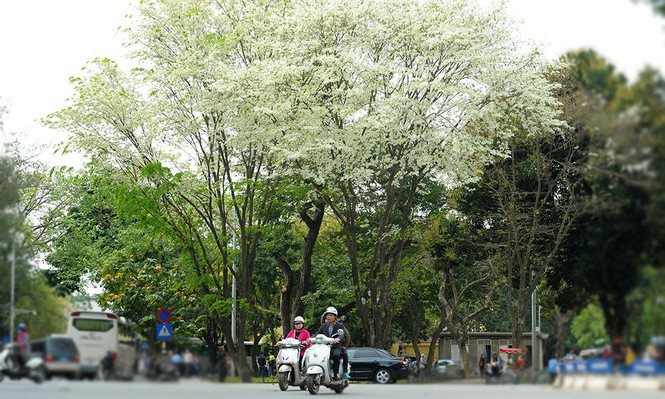
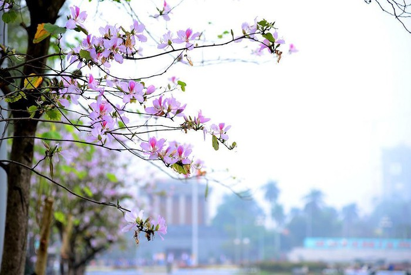

Những nét đặc trưng say đắm lòng người của mùa xuân Hà Nội
Đặc điểm khí hậu của Hà Nội vào mùa Xuân
khí hậu Hà Nội rất dễ chịu, có chút se lạnh nhưng không quá rét như mùa đông, vẫn sẽ có những cơn mưa phảng phất. Đây là thời điểm cây cối đâm chồi nảy lộc, trăm hoa đua nở sau một mà đông giá rét. Mùa xuân được ví von như là mùa của sự đoàn viên, sung túc, hạnh phúc và ấm no.
Ngoài ra, mùa xuân cũng được coi là thời điểm lý tưởng cho hành trình du lịch Hà Nội của bạn, khí hậu Hà Nội cũng không quá lạnh để bạn vi vu phố phường. Ghé Thủ đô dịp đầu năm, bạn sẽ được ngắm những loài hoa đặc trưng như hoa ban, hoa sưa, hay thăm thú những con phố được trang trí rực rỡ chuẩn bị đón Tết. Không chỉ vậy, thời điểm này, Hà Nội còn có những lễ hội truyền thống vô cùng hấp dẫn như lễ hội Đống Đa, lễ hội đấu vật Liễu Đôi, lễ hội Gióng và lễ hội đền Đồng Cổ Loa…
Xuân về, đâu đó một góc trời, đường phố Hà Nội bỗng trở nên thơ mộng hơn bởi sắc màu của hoa ban tím. Thời tiết Hà Nội mùa xuân ẩm ương, nồm và thất thường như con gái vậy. Thế nhưng, dù có đang hờn giận chuyện gì, khi những bông ban đua nở vỗ về, an ủi, Hà Nội liền trở thành một thiếu nữ dịu dàng biết bao.
\ Không chỉ là mùa của muôn vàn những sắc hoa, mùa xuân Hà Nội còn là mùa của rất nhiều lễ hội. Hàng năm, cứ độ xuân về, người dân cả nước lại náo nức kéo về Thủ đô để tham gia những lễ hội nổi tiếng như Lễ hội chùa Hương, Hội gò Đống Đa, Hội đền Sóc, Lễ hội Cổ Loa, Lễ hội đền Hai Bà Trưng, Lễ hội Tản Viên Sơn Thánh... Trong đó, thu hút nhiều người từ mọi miền Tổ quốc tham gia nhất chính là Lễ hội chùa Hương, được tổ chức từ mùng 6 tháng giêng hàng năm, diễn ra trên địa bàn xã Hương Sơn, huyện Mỹ Đức, Hà Nội.